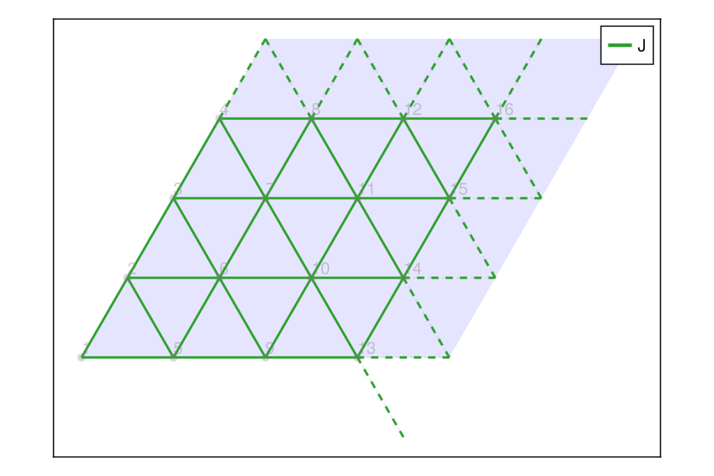

Latlib.jl
Finite lattices and lattice models for quantum many-body simulations.
Latlib.jl builds finite lattice clusters and lattice models. Starting from a Bravais lattice with a basis of atoms, it
- generates finite clusters with periodic or open boundaries,
- finds neighbors under the periodic metric of the cluster,
- assembles interaction terms into an operator sum,
- plots clusters, bonds, and spin configurations,
- and writes site coordinates and interactions to a TOML file that can be consumed by exact diagonalization or other many-body codes such as XDiag.
Installation
Latlib.jl is not yet registered. Install it directly from GitHub:
using Pkg
Pkg.add(url="https://github.com/awietek/Latlib.jl")Julia 1.10 or newer is required. Plotting uses GLMakie, which needs a working OpenGL display.
Quick start
The typical workflow consists of four steps:
- Choose a
Lattice, either predefined or custom. - Cut a
FiniteLatticeout of it by specifying boundary vectors. - Build an
OpSumof interactions withneighbor_interactionandlattice_interaction. - Write the result to a file with
write_tomlor plot it.
using Latlib
# 4x4 cluster of the triangular lattice, periodic in both directions
fl = FiniteLattice(triangular, [4 0; 0 4], true)FiniteLattice
D = 2
a1 = [1.0, 0.0]
a2 = [0.5000000000000001, 0.8660254037844386]
x1 = [0.0, 0.0] (type: 1)
b1 = [4, 0]
b2 = [0, 4]
periodicity = Bool[1, 1]
The sites of the cluster are enumerated by atoms:
sites = atoms(fl)
length(sites)16A nearest neighbor Heisenberg model is generated with neighbor_interaction:
H = OpSum()
H += neighbor_interaction("SdotS", "J", fl; num_distance=1)
length(H.ops)48The cluster and its interactions are written to a TOML file with write_toml. Site indices in the file are 1-based by default; pass zero_based=true for C++ or Python codes. Here we print the file content instead of writing it:
toml = write_toml(fl, H, "triangular-N-16.toml"; zero_based=true, return_string=true)
println(join(split(toml, "\n")[1:20], "\n")) # first 20 lines# This file was generated by Latlib.jl on 2026-09-28 under version "1.0.0-DEV".
# Lattice vectors: a1=(1.0, 0.0), a2=(0.5, 0.8660254)
# Atom positions (Cartesian basis): (0.0, 0.0)
# Atom positions (lattice basis): (0.0, 0.0)
# Torus vectors (Cartesian basis): t1=(4.0, 0.0), t2=(2.0, 3.46410162)
# Torus vectors (lattice basis): t1=(4.0, 0.0), t2=(0.0, 4.0)
Coordinates = [
[0.0, 0.0],
[0.5, 0.8660254],
[1.0, 1.73205081],
[1.5, 2.59807621],
[1.0, 0.0],
[1.5, 0.8660254],
[2.0, 1.73205081],
[2.5, 2.59807621],
[2.0, 0.0],
[2.5, 0.8660254],
[3.0, 1.73205081],Finally, plot_opsum opens an interactive window showing the sites of the cluster, its boundary box, and the bonds of the OpSum, colored by coupling. In the REPL, the window stays open. In a script, it would close as soon as the script ends, so wait until the user closes it:
f, ax = plot_opsum(H, fl)
wait(display(f)) # keeps the window open; not needed in the REPLTo draw into an existing Makie axis instead, e.g. to save the figure to a file, pass it as the ax keyword argument:
using GLMakie: Figure, Axis, DataAspect, hidedecorations!, save
f = Figure(size=(600, 400))
ax = Axis(f[1, 1], aspect=DataAspect())
plot_opsum(H, fl; ax=ax)
hidedecorations!(ax)
save("triangular-N-16.png", f)
f
Three-dimensional lattices are drawn with plot_3d; see Plotting. More complete models, including Kitaev interactions on the honeycomb and hyperhoneycomb lattices, are shown on the Examples page.
Contents
- Lattices
- Finite lattices
- Site ordering for MPS
- Distances and neighbors
- Operators and interactions
- Reading and writing files
- Plotting
- Examples
Index
Latlib.honeycombLatlib.hyperhoneycombLatlib.kagomeLatlib.shastry_sutherlandLatlib.squareLatlib.triangularLatlib.EuclideanMetricLatlib.EuclideanVectorLatlib.FiniteLatticeLatlib.FiniteLatticeVectorLatlib.LatticeLatlib.LatticeVectorLatlib.OpLatlib.OpSumLatlib.PeriodicEuclideanMetricLatlib.atomsLatlib.boundaryLatlib.bravais_cellsLatlib.dimLatlib.distanceLatlib.distance_matrixLatlib.distance_vectorLatlib.distancesLatlib.get_positionLatlib.in_latticeLatlib.lattice_interactionLatlib.lattice_vecsLatlib.natomsLatlib.neighbor_interactionLatlib.neighborsLatlib.order_xyLatlib.order_xyzLatlib.order_yxLatlib.periodic_boundaryLatlib.periodicityLatlib.plotLatlib.plot_3dLatlib.plot_opsumLatlib.positionsLatlib.read_toml_interactionLatlib.to_euclidean_basisLatlib.to_finite_lattice_basisLatlib.to_lattice_basisLatlib.toml_coordinatesLatlib.toml_interactionsLatlib.toml_latticeLatlib.toml_metadataLatlib.unique_ops!Latlib.write_toml